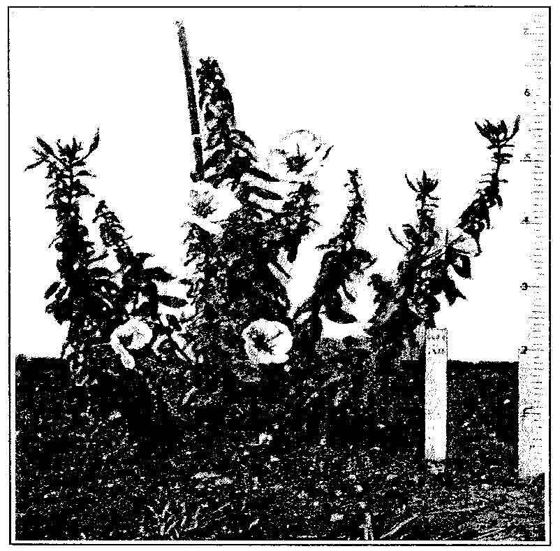
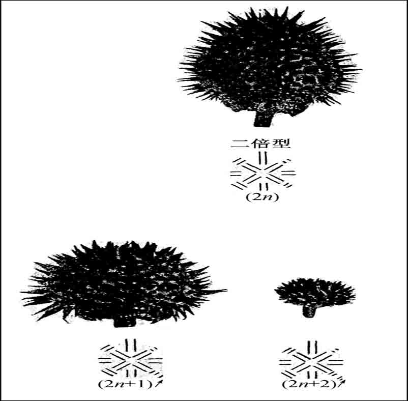
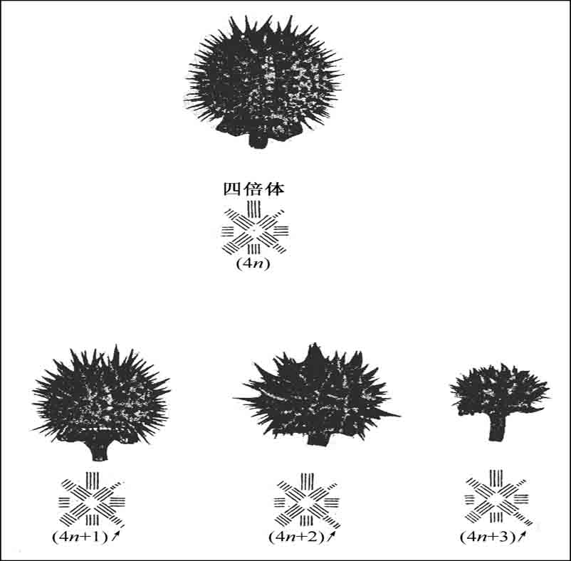
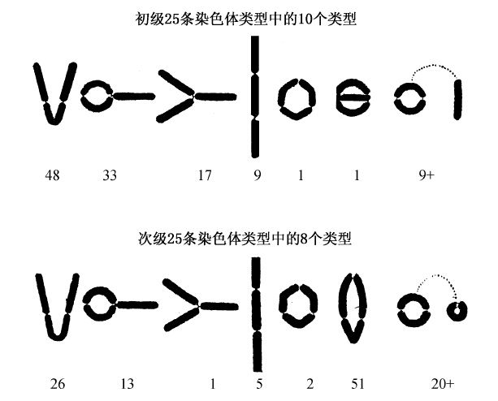
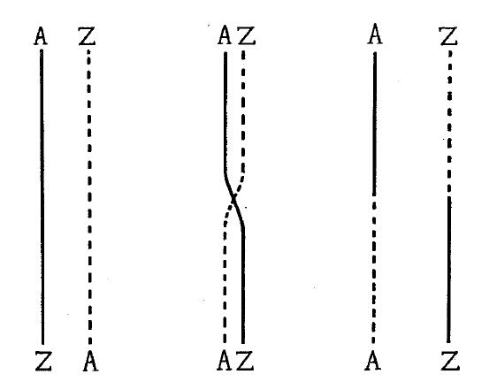
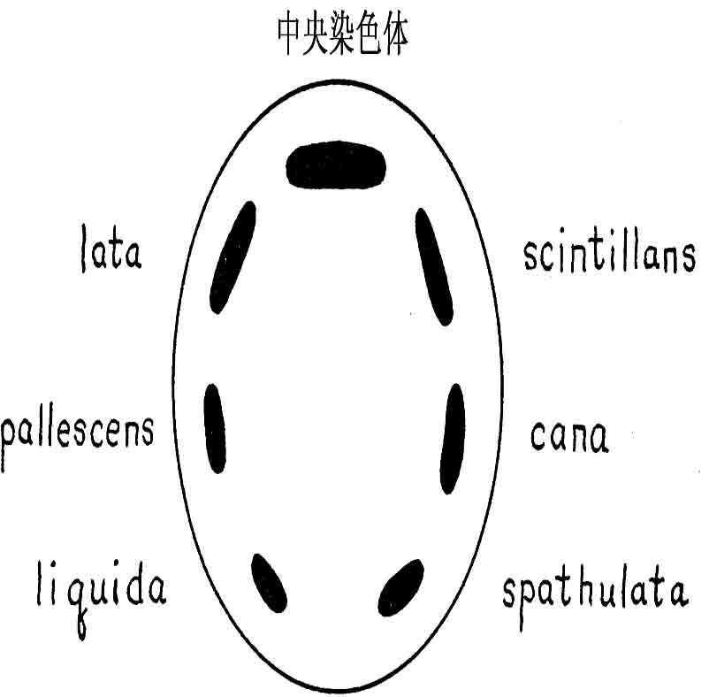

第12章 异倍体
就我所理解的异倍体来说，其最重要的一点是，它们可以用来解释在细胞分裂和成熟机制偶然反常时所发生的奇特有趣的遗传情况。不稳定类型产生了，并且只要这些类型能够维持下去，它们总是不稳定的，也就是说，多一条额外染色体。在这方面，它们显然不同于正常的类型和物种。其次，大多数证据指明：这些异倍体的生活力，比它们亲本的平衡型要弱一些，因而很少能在一个不同的环境下代替原种。
月见草（又称待霄草）。
某群染色体有时由于不规则的分裂和分离，增加了一条或者减少了一条。凡是由于增减一条或多条染色体所造成的新数目的染色体群，都被称为异倍型。仅仅某一类的染色体有三条的染色体群，又被称为三体型（同每类染色体各有三条的三倍体相区别），三体这个词也可以同该类染色体的号数联写，例如果蝇的三体-Ⅳ。这样的一条额外染色体，以前被称为超数染色体或m染色体。某一对的染色体中损失一条时，可用单体这个词加上该条染色体的名号来命名，例如果蝇的单体-Ⅳ型。
已经发现了某些待霄草的突变型同增加一条第15号染色体有关。
拉马克待霄草正常有14条染色体。lata突变型和semi-lata突变型却有15条染色体，即增加了一条染色体（图100）。lata型和拉马克待霄草之间的差异大都轻微，以致只有专家才能辨别，但是这些差异在许多细节上都是存在着的。据Gates报道，某一种lata突变体的雄体几乎完全不孕，种子的产量大为降低。在semi-lata型中一个突变体产生了一些良好的种子。

图100 Oenothera lata（仿Anne Lutz）
据Gates研究，lata型的出现频率，随着不同的后代而异，约为0.1%~1.8%。
在成熟时期，15条染色体突变体的花粉有八条染色体：七条为成对染色体，一条为单染色体。在第一次成熟分裂时，接合中的两条染色体分离开来，分别走向两极。单染色体并不分裂，整条走到一极。在成熟期内，也有一些其他不规则的例子，虽然Gates认为三体-Ⅳ型个体的不规则情况比正常个体更多一些，但是否是额外染色体引起的，却不知道。
从15条染色体型预期可得出两种生殖细胞：一种有8条染色体，一种有7条。现已经证明了两种都有。从遗传学观点来看，lata型同正常型杂交，应该产生同样多的lata型（8+7）和正常型（7+7）的后代。实际结果与此大致符合。
三体型中最有趣的问题，在于究竟是哪一条染色体成为超染色体。既然染色体只分七类，可以预测任何类的染色体都能出现为三体型。据德弗利提示，待霄草有七种三体型，相当于七类可能的超数染色体。
也应该注意，含有两条超数染色体（同类或异类）的四体型，可能不像三体型那样容易生存。我们知道，这样的四体型是有的。譬如三体型的精子和卵子如果各含八条染色体，两者受精，所成的个体似乎有多得两条同类染色体的良好机会，这样便会产生该类染色体的四体型。就生殖细胞各含八对染色体方面来说，这种四体型应该是稳定的，不过它可能比只含一条额外染色体的三体型，更不平衡。也有过16条染色体类型的记录，其中有些能由15条染色体三体型发生出来，因而具有同一染色体的倍数，关于它们的相对存活力，还未见有报道。
经验上，任一对染色体似乎都有可能在三体型产生四体型的过程中重复。不过，即使这样能够达到稳定性，但基因平衡这一个更重要的因素，却会使成对染色体不可能这样永远增加起来。物种含染色体愈多，则基因间的比率变化愈小，其最初阶段的不平衡状态，较之含少数染色体的物种，或者要轻微一些。
Bridges在果蝇中发现了第四小染色体的三体型；因为小染色体上有三个遗传因子，所以不仅有可能去研究新的第四染色体增加时所影响的性状，而且也能够探究这种状态对于一般遗传学问题的关系。另一方面，也看出了含三条染色体的个体，往往死亡；含第二或第三染色体的三体型，也不能存活。
三体-Ⅳ型果蝇和普通型果蝇差别不大，所以难于辨别。和普通果蝇比较，三体-Ⅳ型果蝇体色稍深，胸部缺乏叉型结构（图32）；两眼略小，表面光滑；两翅窄而锐。这些轻微效应是由于增加了一条第四染色体，这点从细胞学证据（图32）和遗传学检查两方面已经得到了证实。三体-Ⅳ型果蝇同无眼果蝇（第四染色体的稳性突变型）同无眼果蝇杂交时，若干子代果蝇，可根据上述性状鉴定是三体-Ⅳ型。再使这种三体-Ⅳ型果蝇反交无眼型（图33），孙代有完全眼和无眼两种，约为5与1之比。如图33所示，这项结果符合于预测数字，如果一个正常基因对于两个无眼基因是显性的话。
孙代中含有两条普通第四染色体和一条无眼第四染色体的三体-Ⅳ型果蝇彼此交配，则产生完全眼和无眼两种个体，约为26与1之比。
在以上杂交里，半数卵子和半数精子各有两条第四染色体，预期可以产生一些含四条第四染色体的果蝇。如果这种四体型果蝇能够发育起来，预计所得完全眼和无眼为35∶1。实际得到的比例（26∶1）与预计比例（假定四体型果蝇能够存活）不符合，这是因为四体型死亡的缘故。事实上，从未发现过四体型果蝇，这意味着第四染色体虽然微小，但当该染色体有四条存在时，便会把基因间的平衡破坏到不能发育成为成虫的程度。
和四体型相反，另一种异倍体果蝇缺少一条第四染色体，称为单数-Ⅳ型（图29），这种类型出现过很多次。据说小染色体有时可能由于减数分裂时两条同入一极，以致一条在种系中失去。单数-Ⅳ型果蝇体色较浅，胸部的三叉纹较为显明，眼大而表面粗糙，刚毛细小，双翅略短，触角刚毛退化甚至消失。所有这些性状都和三体型的性状相反。如果第四染色体上有一些基因和其他基因一道影响蝇体上许多部分，这些差异便毫不足怪了。增加一条染色体，便加强影响；缺少一条染色体，便削弱影响。单数-Ⅳ型比正常型果蝇迟4~5天孵化；单数-Ⅳ型往往不孕，一般产卵很少，死亡率很高。现有大量的细胞学证据和遗传学证据，证明这些果蝇的特点，是由于少了一条染色体。
缺少两条第四染色体的果蝇还未被发现，两个单数-Ⅳ型彼此交配，其子代各型间的比例（单体-Ⅳ型130只，正常蝇100只）证明，完全没有第四染色体的果蝇（称为缺对-Ⅳ）死亡。
双倍型无眼果蝇如果同第四染色体上有正常基因的单数-Ⅳ型交配，其子代果蝇中有些无眼，而且一定属于单数-Ⅳ型。理论上，子代的一半应该无眼，但因单条第四染色体上有无眼基因，以致单倍型蝇的存活率比预计数字减低98%，这种作用也适应于单条第四染色体上的其他隐性突变型基因（弯翅和剃毛）。根据Bridges的研究，弯翅使存活率降低95%，剃毛降低100%，也就是说单数-剃毛型的果蝇不能发育。
曼陀罗Datura stramonium有24条染色体。Blakeslee和Belling发现许多栽培型有25条染色体（2n+1），多半分属于12个类型，各有一条不同的额外染色体。这12个类型所表现出的轻微而恒定的差异，涉及植物的所有部分。蒴果上便充分表现出这种差异（图101）。其中至少有两型（三体-球型与三体-poinsettia）在额外染色体上含孟德尔式因子，经Blakeslee、Avery、Farnham和Belling证明，至少在这两型里，第25号染色体是彼此不同的。特别是在poinsettia三体型中有一条含紫茎白花基因的额外染色体，对于遗传的影响最为明显。从这里看出，含额外染色体的生殖细胞比正常型存活较少，而减少了某些预测类型的数字；事实上，这些生殖细胞（n+1）完全不通过花粉传递（或者仅仅传递一小部分），通过卵子的也只占卵子总数30%。把这些关系都估计在内，那么遗传研究结果便和预测数字符合了。

图101 曼陀罗的正常型蒴果及其12种可能的三体型蒴果（仿Blakeslee，载在《遗传学》杂志）
Blakeslee和Belling在研究三体型曼陀罗时，发现约有12个显然不同的类型，同属于2n+1或三体系。曼陀罗恰好有12对染色体，预计仅能有12个单纯的三体型，事实证明初级三体型也只有12个。其他三体型称为次级三体型，似乎各属于某一个初级三体型（图102）。其证据由下列各方面得来：在外形类似上，在体内结构上（如Sinnott所证明的），在遗传方式相同上（某一标记染色体发生同样的三体型遗传），以及在同一群内一型产生另一型的交互作用上和在额外染色体的体积上（Belling）。

图102 曼陀罗二倍体（2n）的蒴果与2n+1、2n+2两型的蒴果比较（仿Blakeslee，载在《遗传学》杂志）
下表表示初级型及其次级型，皆由三倍体产生出来。

*作者原文中数字排列错误，译文中已经改正了。——译者注。
下表表示初级型与次级型的自然发生频率。其中初级型比次级型发生较多。繁育实验证明，初级型只可以偶尔产生次级型，但次级型却能产生初级型，比产生其他各群的新突变型为多。因此，poinsettia型产生3100个子代植株，其中poinsettia约为28%，次级型wiry约为0.25%；相反，wiry为亲株时，其子代中只有0.75%为初级型poinsettia。

Wedge为Cocklebur群中的一个次级型。Wedge型的育种实验为次级型与初级型之间的关系，提供证据如下。Poinsettia与其次级型wiry在P、p两个色素因子的遗传上，都得出三体型比率，但在spine因子A、a遗传上却得出二体型比率，表示Poinsettia和wiry的额外染色体属于含P、p因子的一组，而不属于含A、a因子的一组。同样，Cocklebur里的比率，也表明该初级型的额外染色体属于含A、a因子的一组，而不属于含P、p的一组。不过其次级型wedge在A、a遗传上却没有得出三体型比率。实得数值同二体型遗传比率相似，而与三体型比率不同。Wedge型是Cocklebur群里的次级型，已经有了强有力的证据，所以上述比率似乎表示wedge的额外染色体上已经缺少了A、a基因点。设以A′表示发生缺失后的染色体，在减数分裂时，Wedge型A′Aa中的A、a分开各入一极，由此会产生A+a+AA′+aA′四种配子，这种行动可以解释表中第5项的比率。如果A′为A因子的缺失，则aA′配子没有A因子，因此得出实际看到的armed和inermis Wedge二体型比率（表中未记载）。如果A同a有时同入一极，则配子势必分为A′（很大可能死亡）和Aa两种，因而促成了Wedge型有时产生初级型Cocklebur。
“次级型额外染色体上的缺失假说，从Belling在细胞学方面的发现，得到了有力支持。不过Belling的颠倒交换假说，提示了染色体上某一部分加倍、而其余部分缺失，从而完成了这一幅书图。”
四倍型曼陀罗中增加一条染色体，也有过报道，如图103。图中示某群有五条相同的染色体；而另一群则有六条相同的染色体。

图103 上行示四倍体蒴果，下行示4n+1、4n+2、4n+3各型的蒴果（仿Blakeslee，载在《遗传学》杂志上）
Belling与Blakeslee研究过在曼陀罗的初级三体型和次级三体型中三条染色体的接合方式，发现某些差异，对于两型之间的关系有所启发。图104上行表示初级型三条染色体的各种接合方式，各式下面的数字，表示该型出现次数。其中三价V为最普通的联合方式（48），其次为环棒型（33），再次为Y（17），为直链（9），为环（1），为双环（1），以及两条成环，另一条独立（9+）。既然假设染色体是借着相同的两端靠拢、接合起来，那么，也就有理由来假定：在上述各型里，相同的两端（A同A，Z同Z）仍然是互相接触的（参考图104上行）。
图104下行示次级型三条染色体联合的各种方式。这些类型，在联合方式上，与初级型大致相同，但发生次数则不一致。最显著的特点，是右侧的最后两型，其中一型的三条染色体联合成长环，另一型则有一环由两条染色体组成，另一小环由单条染色体组成。以上两型意味着某条染色体的一端已发生了某种变化。Belling和Blakeslee曾经提出下一假设，说明在三倍体亲株或初级三价型的前一时期内，这种变化是如何发生的。譬如，假使两条染色体像图105所示的那样颠倒位置，相并接合，又假使两者在中央部分发生交换，即只有相同基因并列为唯一平面上交换。结果，每条染色体的两端都会相同，一条的两端为A、A，另一条为Z、Z。如果这样的染色体在下一代成为三价染色体中的一条，便有可能构成图106（下行）所示的Z—Z染色体和两条正常染色体结合的那种联合方式，即相同的两端互相接合。

图104 三体型曼陀罗三条染色体的联合方式（仿Belling和Blakeslee）

图105 示两条染色体在相反方向时可能发生的接合

图106 示三体型曼陀罗三条染色体可能有的接合类型（仿Belling与Blakeslee）
如果次级型特有的环形能够照上述解释的那样，那么在三价染色体中，有一条会有半截重复，从而与其他两条不同。因此，次级的基因组合也将与初级型的基因组合不同。
据桑田义备报道，玉蜀黍（Zea mays）有20条染色体（n＝10），不过某些糖质玉蜀黍有21条、22条，甚至23条、24条之多的。桑田义备认为玉蜀黍是杂种，其新型中有一种是墨西哥teosinte种（Euchleana）。玉蜀黍有一对染色体，其中一条较长，一条较短，桑田义备认为长染色体由teosinte得来，短染色体则由一个无名物种传递而来。有时长染色体裂成两段，由此说明了在糖质玉蜀黍中所看到的染色体增加现象。这项解释如果得到证实（近来已经怀疑这一点），则以上21、22、23条染色体类型都不是严格的三体型了。
德弗利关于拉马克待霄草额外染色体型的结论，在说明进步性突变的起源上，也就是在说明突变同进化的关系上，有着重大的意义。在三体型性状上所经常看到的无数轻微变化，符合了以前德弗利关于如何构成一个初级物种，好像在瞬息间出现了两种初级物种的定义。
应该看到，就生殖物质说来，当染色体增加一条，从而产生突变效应时，其结果会牵涉遗传单元实际数目的巨大改变。这种改变绝不能同单个化学分子内的改变相比，除非把染色体看成是一个单元，这种比较才有其重大意义。但从基因观点说来，染色体的组成是很难符合这种比较的。
就我所理解的异倍体来说，其最重要的一点是，它们可以用来解释在细胞分裂和成熟机制偶然反常时所发生的奇特有趣的遗传情况。不稳定类型产生了，并且只要这些类型能够维持下去，它们总是不稳定的，也就是说，多一条额外染色体。在这方面，它们显然不同于正常的类型和物种。其次，大多数证据指明：这些异倍体的生活力，比它们亲本的平衡型要弱一些，因而很少能在一个不同的环境下代替原种。
不过，异倍体的发生必须看成是一件重大的遗传事件，了解了它们便有可能澄清许多情况，如果没有研究它们的染色体的知识，这些情况是会极其复杂费解的。
德弗利鉴定了六个三体突变型；此外，又鉴定了第七型，第七型同其他六型的遗传学关系，比六型相互间的遗传学关系，有着更显著的差异。德弗利认为以上七个类型可能相当于待霄草的七条染色体，其中六型如下表。图107表示有关的染色体群。

图107 示德弗利对于拉马克待霄草七条染色同三体突变型相互关系的看法（仿德弗利和Boedijn）
15条染色体突变型：
1.Lata群
a.Semi-lata.
b.Sesquiplex突变型：albida，flava，delata.
c.Subovata，sublinearis.
2.Scintillans群
a.Sesquiplex突变型：oblonga，aurita，auricula，nitens，distans.
b.Diluta；militaris，venusta.
3.Cana群：candicans
4.Pallescens群：lactuca
5.Liquida
6.Spathulata
表内六个初级突变型之下各有若干次级型。初级型与次级型的相互关系，不仅表现在性状上的类似上，也表现在两者互相产生的频率上。其中，albida和oblongata两型各有两种卵子和一种花粉，称为one-and-one-half型或sesquiplex突变体。另一次级型candicans也是一个sesquiplex型。在染色体群内中央染色体即最长的一条染色体上面（图107）有volutine的一些“因子”或有lata的一些“因子”。德弗利根据Shull所找到的证据，把新突变型funifolia和pervirens列入它们之中。因此，依照Shull的意见，拉马克待霄草其他五型（注：红萼芽体和它的四个等位因子；红基（加强因子）、短株、桃色锥状芽、硫色花。的突变体以及使这些因子维持平衡致死状态的若干致死因子，似乎多半属于这一群。Shull认为这些隐性性状的出现，是由于这里被暂时鉴定为中央染色体的一对染色体之间发生了交换的缘故。